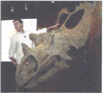

Our Mission
San Joaquin Valley Town Hall is a non-profit organization that is run by an all-volunteer board of directors. Our mission is to bring nationally and internationally renowned, thought-provoking speakers who inform, educate, and entertain our audience. As one of our members told us:
“Each year I give a ticket package to each of our family members. I think of it as the gift of knowledge... and that is priceless.”
Speaker of the Month
Fossil Threads in the Web of Life
February: Scott Sampson
What's 75 million years old and brand spanking new? A teenage Utahceratops! Come to the Saroyan, armed with your best dinosaur roar, when Scott Sampson, Research Curator at the Utah Museum of Natural History, steps to the podium...
Our Ticket Packages
- Season Package: $95
- Patron Package: $200
- Single Speaker: $25